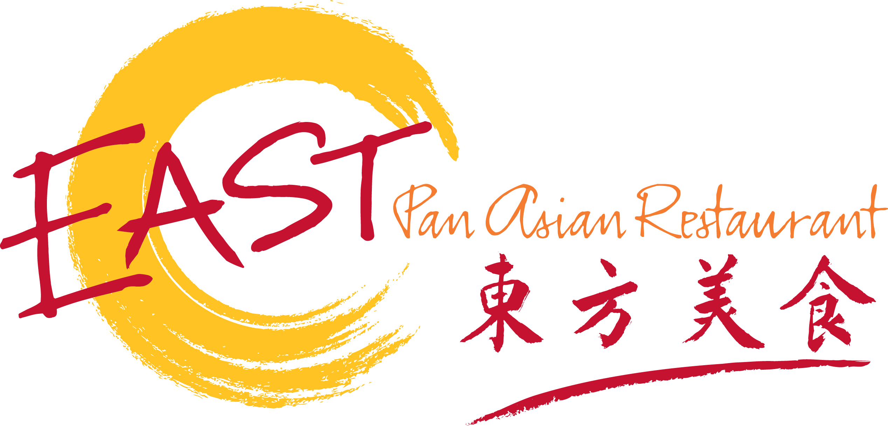
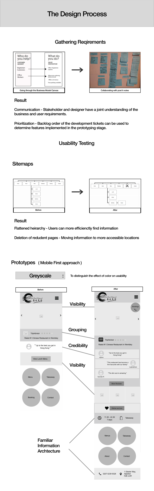

ML
Work
CV
Story
East
A UX project for East Restaurant website

I gathered business requirments, designed prototypes using UXpin and performed usability testing

Click here
to read a more in-depth analysis of the prototyping proccess
Click here
to view the visual breakdown of google analytics reseach
Next Project